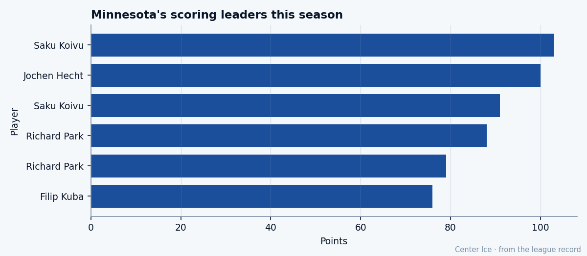

Potential 88, Minutes 11.5: Pierre-Marc Bouchard plays third-center ice on a first-center game
The Bureau's Index has the Wild's 8th overall pick up six. The room has him at 11.5 minutes a night, behind two men the Wild will never move.
 Tomáš VránaProfile writer · The Sweater
Tomáš VránaProfile writer · The SweaterPierre-Marc Bouchard79 is 20 years old, up six on the Bureau's Development Index, and playing 11.5 minutes a night for a team that won 20 games. His base grade sits at 74 and his potential says 88. The gap between his ice time and his linemates' is closer to 11 minutes, and that is the one the room can fix.
The Development Index has Bouchard among its top risers this edition, tied for the +6 at the top alongside  Marian Gaborik99 and Mike Komisarek81. The hook the Bureau attached to his name reads: form up 6 on the Index. His overall today reads 77. He has scored 14 goals and 29 points in 75 games at 11.5 minutes a night.
Marian Gaborik99 and Mike Komisarek81. The hook the Bureau attached to his name reads: form up 6 on the Index. His overall today reads 77. He has scored 14 goals and 29 points in 75 games at 11.5 minutes a night.

The Wild's top two centers are  Saku Koivu84 and
Saku Koivu84 and  Jochen Hecht74. Koivu has 103 points in 82 games and 1787 total minutes this season, which works out to more than 21 minutes a night. Hecht sits in the league's top 30 in scoring with 97 points in 73 games and 23.0 minutes a night. Bouchard plays roughly half of what either of them plays, and he carries a passing grade of 88 and a puckhandling grade of 88, three grades below the 91 the Bureau gives its best playmakers.
Jochen Hecht74. Koivu has 103 points in 82 games and 1787 total minutes this season, which works out to more than 21 minutes a night. Hecht sits in the league's top 30 in scoring with 97 points in 73 games and 23.0 minutes a night. Bouchard plays roughly half of what either of them plays, and he carries a passing grade of 88 and a puckhandling grade of 88, three grades below the 91 the Bureau gives its best playmakers.
Speed 90. Agility 87. Deking 88. Those numbers belong in a top-six role, in the kind of minutes where a center controls a shift's entry and exit and finds the seam on the half-wall. Instead the room gives him 11.5 minutes, which means he gets a forechecking shift, a penalty-kill shift, and whatever is left after Koivu and Hecht finish their nights.
The body the room can't trust
At 70 inches and 165 pounds, Bouchard has a fighting grade of 50, a toughness grade of 50, and a checking grade of 52. The Bureau's Book says the rest of his body is a weapon. The speed is 90. The acceleration is 87. The stickwork grades all sit in the high 80s. The checking and toughness numbers say that a defenseman in the Northwest Division can put a hip into him at the half-wall and take the puck, and the room has made a calculation about what that costs in a 72-game season.
The Wild play in the Northwest alongside  Colorado Avalanche,
Colorado Avalanche,  Edmonton Oilers,
Edmonton Oilers,  Vancouver Canucks and
Vancouver Canucks and  Calgary Flames. That is four clubs that dress men who use the boards as a weapon. Bouchard's 52 checking grade means the coach looks at that matchup, looks at the score, and finds another forward for the third period. The Index can climb. The minutes stay at 11.5.
Calgary Flames. That is four clubs that dress men who use the boards as a weapon. Bouchard's 52 checking grade means the coach looks at that matchup, looks at the score, and finds another forward for the third period. The Index can climb. The minutes stay at 11.5.
Sherbrooke to the 8th pick to 29 points
Bouchard played in the 1998 Quebec International Pee-Wee Hockey Tournament with the College-Francais Rive-Sud team from Montreal's South Shore. He was 13 years old. Four years later, the  Minnesota Wild took him 8th overall in the 2002 draft. He played 50 games that season at 18 years old and put up 20 points. That number, at that age, is what makes a front office believe in a man's ceiling.
Minnesota Wild took him 8th overall in the 2002 draft. He played 50 games that season at 18 years old and put up 20 points. That number, at that age, is what makes a front office believe in a man's ceiling.
Last season he managed 10 points in 36 games. This season he is at 29 in 75, already past both of his previous totals combined, and the Index says he is trending up. The question now is whether the room can find him the minutes the grades say he can play.
The contract dies in July
Bouchard is on $1.20M with 1 year left on his deal. He turns 21 in April. If he holds this form into next season, if the Index keeps him up six, if the overall climbs toward that 88 potential, the question at July is whether Minnesota can build around a 21-year-old who grades 88 in passing and 50 in toughness, and whether that determines whether he gets Koivu's minutes or someone else's.
The Wild's payroll buys them a team that scored 219 goals and gave up 255 in 73 games, sitting 20-36-7 with 67 points. They are not contending. They are not rebuilding in any direction that involves trading Bouchard, because a man with 90 speed and 88 hands on a first-round contract that costs $1.20M is the kind of asset a 20-win team keeps and builds around, even if the current coach puts him on the third line.
Ed Taylor at Toronto talked this week about polishing a contender and finding cap room for a 39-year-old goaltender. Minnesota has no such problem. Minnesota has a 20-year-old with potential 88, morale of 92, and a role that caps him at 11.5 minutes. The room says his body can't take more than that in this division. The Index says the rest of Pierre-Marc Bouchard is getting better every week.